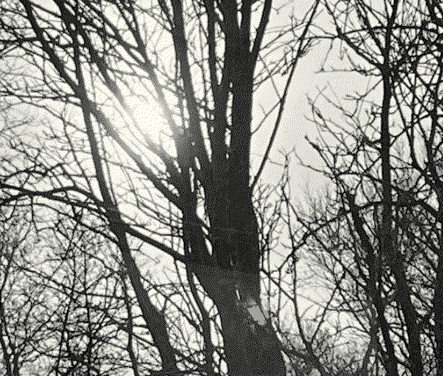

archive mix 1 [19.03.23]
There is seemingly endless music floating around. One of my favorite pastimes is getting lost in catalogs from various labels or radio mixes and fill hard drives with sounds and ideas that interest me. The urge to make mixes out of these folders came to me recently, usually I forget them and only look at them when searching for inspirations. I wanted this mix to be very creative and approached in a form similar to improvisation with a band, letting elements flow together and see where they meet. Luckily, even though I don't own proper dj equipment, Jón Múli has stored his Numark controller at my place for a year now so I was able to use that and was excited about working with its limitations - due to the nature of the music I wanted to take a more textural approach as opposed to beatmatching or the sorts. I recorded the whole thing at 1 am with very quiet speakers so the mix feels almost fragile to me.
I plan for this to be the first in a series of mixes without a determined frequency. One of the main reasons for the creation of this site was to challenge my notions of creation and put out song ideas and mixes on my own terms so this feels like a fitting first entry.
Dedicated to my friends in glupsk - Ölli & Villi
Tracklist
Jim ORourke - The Ground Above Below Our HeadsYyed - doing it all over hog track
Taku Sugimoto - Excerpt of Track 1 Octet
ssabæ - en équilibre
Marja Ahti - In Ictu Oculi
FC - PAPER PLANS REMASTER
James Bradbury - Process 1
Eiko Ishibashi & Jim ORourke - Live in Okayama
Fabio Perletta - CellFate I
Aleksandra Słyż - Softness Flashes Floating Rage
Anne Carson reading at the national library
JNSN CODE GL16 Autechre Touched Music
parenthesis 1 Simon Opit
Boris - 序章 三叉路
Arnau Sala Saez - 10 mostres en 11 minuts i 11 segons
Youmna Saba - At The Mercy Of Battery Life Impromptu (Arnau bland áfram)
maxi - hildegard
James Bradbury - Biomimicry 2b
MultiTraction Orchestra - Reactor One Part I
Yyed - An Instant Folded Over Itself Into A Knot
UAN0012 - 06110510ksrtt
Slowfoam & Neilll - Cyberpoetics
Derek Bailey - DAT edit 5
nudo - pentecostear
ssabæ - larchipel fractal
Unt - 55 Insomnia Unt
Leo Okagawa - compression and overload
Daisuke Tobari - 戸張大輔
Holy Similaun - Macena Fleussrko Suntinan_Ukyìo
இலகள எபபதம என ஐனனலல பசச நறமக மறம
Susan Howe/James Welling - Frolic Architecture
Fuubutsushi - The End of Antelope Island
OKI - Kai Kai As To Rippling Lake
